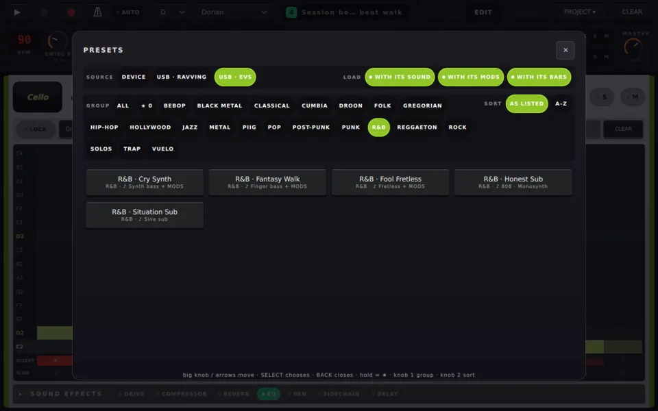
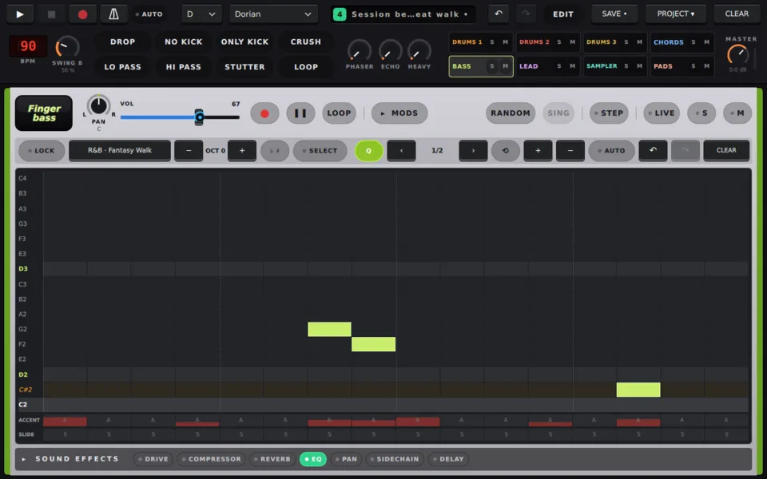

Usar ravving / guide/load-a-preset.md
Cargar un preset
Elige un preset de tu MIKO o de una memoria USB, decide qué se trae y deshazlo.
Un preset es un patrón ya hecho para un instrumento, a veces con el sonido para el que se escribió. Así se carga uno, desde tu MIKO o desde una memoria USB.
Abre los presets
- Abre la página del instrumento: 1 a 5.
- Toca el nombre del preset en la barra del patrón, la casilla junto a LOCK.
El diálogo PRESETS se abre en la fuente de la que vino tu patrón actual, con ese preset marcado.

Elige de dónde viene
SOURCE muestra DEVICE, y un botón por cada memoria USB conectada. Elige una memoria para tocar sus presets directamente, sin copiar nada. La fila solo aparece cuando hay una memoria.
Elige qué se trae
Los tres interruptores LOAD deciden qué trae un preset:
| Interruptor | Activado | Desactivado |
|---|---|---|
| WITH ITS SOUND | el instrumento cambia al sonido del preset | tu sonido se queda |
| WITH ITS MODS | se aplican los MODS del preset | tus MODS se quedan |
| WITH ITS BARS | la duración propia del preset | sobre tus compases: uno más corto se repite, uno más largo se corta |
Al activar WITH ITS SOUND también se activa WITH ITS MODS, porque un sonido se oye con sus MODS. Puedes volver a apagar MODS. Tus elecciones se recuerdan.
Un preset que trae un sonido muestra ♪ y el nombre del sonido bajo su género, y "+ MODS" cuando tiene MODS.
Encuentra uno y cárgalo
- GROUP: un botón por género, o ALL.
- SORT: AS LISTED o A–Z.
- ★: mantén pulsado un preset para hacerlo favorito.
Toca un preset para cargarlo. El diálogo se cierra y la barra muestra el nombre del preset.

¿Cambiaste de idea?
Toca ↶ en la barra, o pulsa ALT + ◀. Un deshacer devuelve tu patrón.
El sonido no forma parte del historial de deshacer, así que se queda. Para recuperar el tuyo, toca la placa y vuelve a elegirlo.
Más
- Fuentes de sonido: guardar tus propios presets, y qué guarda un preset.
- Los packs de géneros: veintidós packs para poner en una memoria.